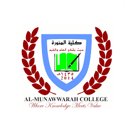

At Al-Ahgaaf International School in Yemen, Dr. Musa Mwachadu Shauri serves as a cornerstone of professionalism in education. With a tenure commencing in August 2021, Dr. Shauri has demonstrated unwavering dedication and a profound commitment to fostering a conducive learning environment. As an Islamic Teacher, he not only imparts religious education but also cultivates critical thinking and creativity among his students. Dr. Shauri's professionalism shines through his meticulous lesson planning, effective classroom management, and proactive engagement with students, parents, and fellow educators. He embodies the ethos of lifelong learning, continually refining his teaching methodologies to adapt to the evolving educational landscape.
During his tenure at Munawwarah College in Kenya in 2021, Dr. Musa Mwachadu Shauri exemplified professionalism as an Islamic Studies Lecturer. In this role, he imparted profound religious knowledge while fostering an atmosphere of intellectual curiosity and academic rigor. Dr. Shauri's professionalism extended beyond the classroom, as he actively contributed to curriculum development initiatives and engaged in scholarly discourse to enhance the quality of education. His collaborative approach, coupled with a steadfast commitment to excellence, earned him the respect and admiration of colleagues and students alike.
At Madrasatul Munawwarah in Kenya, Dr. Musa Mwachadu Shauri's professional journey unfolded over a span of eight years, from 2013 to 2021, encompassing various roles of increasing responsibility. As an Islamic Teacher, Dr. Shauri instilled values of compassion, integrity, and lifelong learning in his students, laying the foundation for their holistic development. In his capacity as an Examination Officer, he demonstrated meticulous attention to detail and a commitment to upholding academic standards. Furthermore, as the Head of Academics and Co-curricula, Dr. Shauri provided visionary leadership, spearheading initiatives to enhance both academic and extracurricular offerings. His professionalism, coupled with a genuine passion for education, significantly contributed to the growth and success of Madrasatul Munawwarah.
Marriage in Islam is not just a legal thing; it's a spiritual journey. We believe it's a way to make Allah happy and follow the footsteps of our beloved Prophet Muhammad (peace be upon him). He encouraged us to get married and build strong families.
Dr.Mussa is certified to conduct islamic marriages based on all the islamic priciples and guiaanece dictated by the Holy book.

Event management is one of the most thrilling careers available. The average event planner is a busybody in charge of creating a great experience for attendees.
Dr.Musa ia a good event plannner and and event manager.